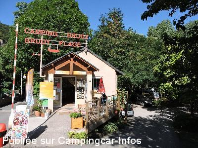
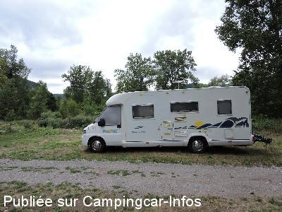

ACS = Aire de services sur camping acceptant le passage pour les services de :
LE ROZIER
(N° 413)
Accès/adresse :
Chemin de Brouillet
Camping Brudy **
48150 LE ROZIER
Camping Brudy **
48150 LE ROZIER
Latitude : (Nord) 44.19081° Décimaux ou 44° 11′ 26′′
Longitude : (Est) 3.20454° Décimaux ou 3° 12′ 16′′
Tarif : 2015
2 personnes, services : 11,50 à 12,50 €
Personne + 12 ans : 3,70 €
Enfant 2 à 12 ans: 2,20 €
Électricité : 2 à 3 €
Taxe de séjour + 13 ans : 0,20 €
Services C-C de passage : 3,50 €
Type de borne : Plateforme
Services :


Accès handicapés
Lave-linge
Tous commerces
Autres informations :
Ouvert du 1/05 au 30/09
Tel : +33 (0)565 626 623
contact@campingdes gorges.fr
http://www.campingdesgorges.fr

Le 29/08/2015 par Christine et Rico

Le 29/08/2015 par Christine et Rico
de
Renou
le 29/08/2015 :
De passage dans les gorges du tarn pour deux ou trois jours et trop bien dans le camping nous sommes resté pour les vacances donc dix jours. Sandrine et Arnaud vous accueillent dans leur camping
avec un grand sourire et toujours aux petits soins pour leurs campeurs et camping caristes de grands emplacements et bien équipé pour nos camping-cars et toujours pour un prix super raisonnable
Je vous le recommande
De passage dans les gorges du tarn pour deux ou trois jours et trop bien dans le camping nous sommes resté pour les vacances donc dix jours. Sandrine et Arnaud vous accueillent dans leur camping
avec un grand sourire et toujours aux petits soins pour leurs campeurs et camping caristes de grands emplacements et bien équipé pour nos camping-cars et toujours pour un prix super raisonnable
Je vous le recommande
de
Guy Huon 29830
le 21/10/2008 :
Nous y sommes restés quelques jours à la mi-septembre. L'accueil est chaleureux et le propriétaire n'est pas avare de renseignements sur les environs. Bien que "rustique" le camping est très bien tenu. Nous avons payé 11,50€/jour à 2 personnes, électricité comprise.
Le village est idéalement situé au confluent de la Jonte et du Tarn, et à proximité immédiate du village médiéval de Peyreleau. Nombreux choix de visites de sites et de randonnées. Ne pas manquer l'ascension du Capluc et surtout la balade sur le Causse Méjean qui surplombe les gorges du Tarn et de la Jonte.
Nous y sommes restés quelques jours à la mi-septembre. L'accueil est chaleureux et le propriétaire n'est pas avare de renseignements sur les environs. Bien que "rustique" le camping est très bien tenu. Nous avons payé 11,50€/jour à 2 personnes, électricité comprise.
Le village est idéalement situé au confluent de la Jonte et du Tarn, et à proximité immédiate du village médiéval de Peyreleau. Nombreux choix de visites de sites et de randonnées. Ne pas manquer l'ascension du Capluc et surtout la balade sur le Causse Méjean qui surplombe les gorges du Tarn et de la Jonte.